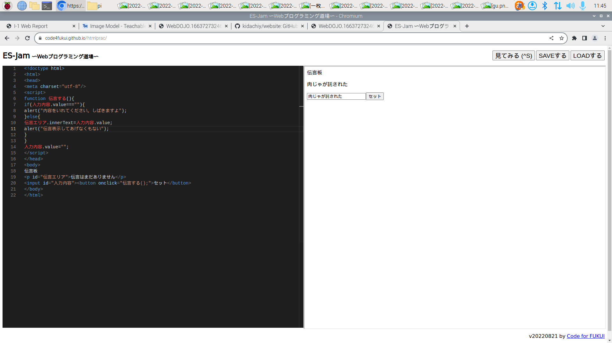

最終レポート ： 公大高専１年実習I-1
4組9番 木田千紘
第3週目
3-1 JavaScript体験：伝言プログラムを作る

伝言板
1.内容
ES-jamでプログラムを作成ししました。まず始めにプログラミング道場で検索し、ES-jamに入りました。 そこにプリントにあったプログラムをうちこみました。 伝言板のところにコメントを打ち込み、ボタンをおすと掲示されるようにできました。
2.感想
出来上がったもの自体は見た目作るの簡単そうに見えても、 ボタンや文字を打ち込めるようにするだけでプログラム自体の長さがとても長くなるのが面白かったです。
3-2 VR体験
1.内容
VRゴーグルを着用し、３D空間で移動したり仮想オブジェクトを動かしたりしました。 他には、会議室で他の人と会話したり、絵を書いたりしました。
2.感想
あまりなれない機械に、少し酔いそうになりましたがとても楽しかったです。 機器がすごく重たくて、頭が痛くなりましたが、この先もっと軽量化されると思います。
第2週目のレポート
2週目のレポート
第1週目のレポート
1週目のレポート